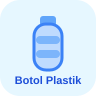
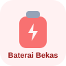
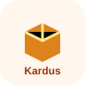
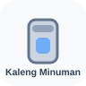

Direktorat Jenderal
Pendidikan Anak Usia Dini,
Pendidikan Dasar, dan
Pendidikan Nonformal dan Informal


 Pengembangan dan Pengujian Instruksi
Pengembangan dan Pengujian Instruksi
Susun aturan JIKA → MAKA, amati bagaimana urutan menentukan segalanya.
Komputer tidak menebak. Sistem membandingkan setiap item dengan aturan yang kamu susun dari atas ke bawah — dan berhenti pada aturan pertama yang cocok. Itulah mengapa urutan aturan adalah inti dari logika percabangan.




Susun aturan If → Else If → Else agar sistem dapat memilah sampah secara otomatis, akurat, dan tetap benar ketika ada kondisi yang saling bertumpuk.
Komputer tidak memilih secara asal. Komputer mengambil keputusan berdasarkan aturan yang kamu susun.
Pada lab ini, kamu akan belajar 5 hal penting:
Tulis jawabanmu sendiri — tidak ada jawaban yang salah!
Pilih item sampah, lalu lihat bagaimana sistem menelusuri aturan satu per satu sampai ada yang cocok!
Item-item ini bisa cocok dengan lebih dari satu kondisi. Pilih tong yang paling tepat berdasarkan aturan prioritas!
Susun aturan-aturan berikut dari yang paling khusus ke paling umum!
Setiap level berisi aturan yang sengaja belum optimal. Tugasmu: deteksi masalahnya, lalu perbaiki aturan sampai akurasi 100%.

NamaRamli Jainal Muttaqin, S.Pd.
InstansiSMP Labschool Jakarta
Emailramlimuttaqin42@guru.smp.belajar.id
NamaRamli Jainal Muttaqin, S.Pd.
InstansiSMP Labschool Jakarta
Emailramlimuttaqin42@guru.smp.belajar.id
Silakan baca terlebih dahulu Tujuan Pembelajaran dan Cara Penggunaan sebelum memulai percobaan.